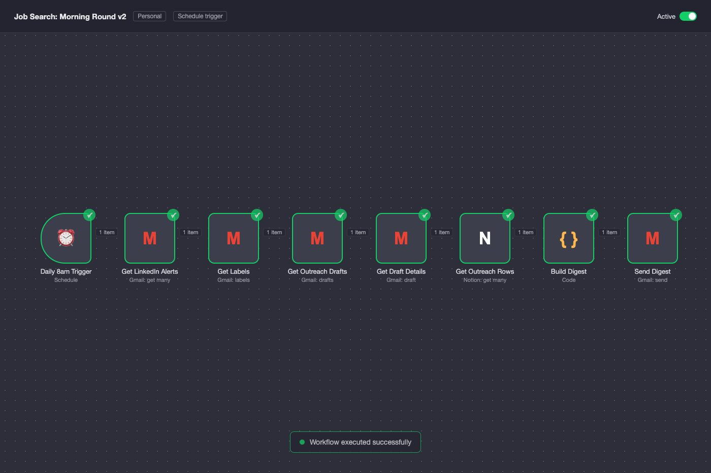

The job search machine
- Problem
- A serious search is a pipeline, and running a pipeline by hand out of browser tabs eats the hours that should go into the actual applications.
- Built
- Research and drafting run per company, with a gate that stops anything that shouldn't go out. Outreach drafts show up in a morning digest with one-tap approve and send. The work samples carry a beacon that pings my phone when somebody opens one. Friday I get a scorecard. Notion holds all of it.
- Stack
- claude code / n8n / notion / gmail
